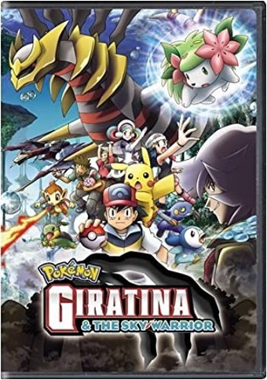

Pokemon

概况
Pokemon电影是我从小就喜欢的电影。
不知道这个动画系列的人大概没有吧。
看着这部电影，我总回想起小时候的回忆。
简介
由于涉及时间力量的迪亚鲁加和涉及空间力量的Pearlgia之间的斗争,现实世界的反转世界--破碎的世界将受到影响。
管理着破碎世界的吉拉蒂娜对自己的世界被玷污感到愤怒,并攻击了恰巧出现在现实世界的迪亚鲁加,成功将她带到了破碎的世界。
但是,在卷入两人争斗的谢米的力量下,迪亚鲁加和谢米虽然摆脱了破碎的世界,但吉拉蒂娜却无法走出被迪亚鲁加打破的世界。
Giratina为了利用Shami的种子选手进入现实世界,瞄准了Shami。
另一方面，想要弄到破碎的世界的谜团男人杰罗也瞄准了Shamei，Shamei在逃跑途中遇到了智友一行人……….